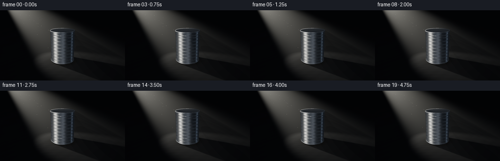
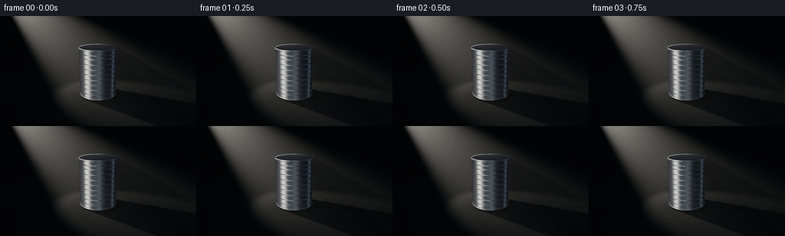

CODING AGENTS AS PIXEL WORLD MODELS
traex/GPT-6.1-Sol · phygen_042
点击播放 · 原生 RGB 像素
逐轮保存的候选
回放视频、检查图与代码变化。
每份候选均可单独播放。实际图片检查记录在下方工具轨迹中。
候选 01播放与检查图
点击播放 · 原生 RGB 像素


展开代码变化
--- 上一保存版本
+++ 本次保存版本
@@ -0,0 +1,283 @@
+"""Generate the requested film with a self-contained analytical RGB renderer.
+Only NumPy and Pillow are used; all geometry, light transport, and textures
+are mathematical. Run this file to rebuild all output artifacts.
+"""
+from pathlib import Path
+import json
+import numpy as np
+from PIL import Image
+from artifact_io import save
+
+ROOT = Path(__file__).resolve().parent
+SPEC = json.loads((ROOT / 'task_spec.json').read_text())
+W, H = SPEC['width'], SPEC['height']
+SS = 3
+SW, SH = W*SS, H*SS
+DT = np.float32
+
+def unit(a):
+ return a / np.maximum(np.linalg.norm(a, axis=-1, keepdims=True), 1e-9)
+
+def smooth(a,b,x):
+ q=np.clip((x-a)/(b-a),0,1)
+ return q*q*(3-2*q)
+
+camera=np.array([0.,2.8,6.2],dtype=DT)
+target=np.array([0.,.86,0.],dtype=DT)
+fwd=unit(target-camera)
+right=unit(np.cross(fwd,np.array([0.,1.,0.],dtype=DT)))
+up=np.cross(right,fwd)
+focal=SH/(2*np.tan(np.deg2rad(33)/2))
+xx,yy=np.meshgrid(np.arange(SW,dtype=DT)+.5,np.arange(SH,dtype=DT)+.5)
+rays=unit(fwd+(xx[...,None]-SW/2)/focal*right-(yy[...,None]-SH/2)/focal*up).reshape(-1,3)
+NPIX=len(rays)
+
+# A ground plane and a sealed, unlabelled tin with true beveled rolled rims.
+nearest=np.full(NPIX,1.e5,dtype=DT)
+normal=np.zeros((NPIX,3),dtype=DT)
+kind=np.zeros(NPIX,dtype=np.int8)
+radial=np.zeros(NPIX,dtype=DT)
+
+tground=np.where(rays[:,1]<-1e-6,-camera[1]/rays[:,1],1.e5)
+nearest[:]=tground
+normal[:,1]=1
+
+def install(t,n,k):
+ global nearest,normal,kind
+ hit=(t>0)&(t<nearest)
+ nearest[hit]=t[hit]
+ normal[hit]=n[hit]
+ kind[hit]=k
+
+# Conical sections analytically intersected, including a cylindrical body.
+def section(y0,y1,r0,r1,k):
+ slope=(r1-r0)/(y1-y0)
+ rc=r0+slope*(camera[1]-y0)
+ a=rays[:,0]**2+rays[:,2]**2-(slope*rays[:,1])**2
+ b=2*(camera[0]*rays[:,0]+camera[2]*rays[:,2]-rc*slope*rays[:,1])
+ c=camera[0]**2+camera[2]**2-rc**2
+ disc=b*b-4*a*c
+ root=np.sqrt(np.maximum(disc,0))
+ for sg in (-1,1):
+ t=(-b+sg*root)/(2*a)
+ p=camera+rays*t[:,None]
+ valid=(disc>=0)&(p[:,1]>=y0)&(p[:,1]<=y1)
+ n=unit(np.stack([p[:,0],-slope*np.sqrt(p[:,0]**2+p[:,2]**2),p[:,2]],axis=-1))
+ install(np.where(valid,t,1.e6),n,k)
+
+section(.055,1.68,.633,.633,1)
+for cy in (.062,1.682):
+ # Each rolled seam is a rounded meridional section, not a drawn outline.
+ ang=np.linspace(-np.pi/2,np.pi/2,11)
+ ys=cy+.029*np.sin(ang)
+ rs=.632+.024*np.cos(ang)
+ for i in range(len(ys)-1):
+ section(float(ys[i]),float(ys[i+1]),float(rs[i]),float(rs[i+1]),3)
+
+for height,rad,k in [(1.690,.635,2),(.034,.634,3)]:
+ tt=(height-camera[1])/rays[:,1]
+ p=camera+rays*tt[:,None]
+ good=(p[:,0]**2+p[:,2]**2<=rad*rad)
+ n=np.zeros_like(p);n[:,1]=1
+ install(np.where(good,tt,1.e6),n,k)
+
+points=camera+rays*nearest[:,None]
+obj=kind>0
+body=kind==1
+lid=kind==2
+rim=kind==3
+floor=kind==0
+radius=np.sqrt(points[:,0]**2+points[:,2]**2)
+theta=np.arctan2(points[:,0],points[:,2])
+
+# Fine physically scaled brushed grain, and the reinforcing ridges of a tin.
+y=points[:,1]
+groove_derivative=np.zeros(NPIX,dtype=DT)
+groove=np.zeros(NPIX,dtype=DT)
+for height in [.23,.40,.57,.74,.91,1.08,1.25,1.42,1.54]:
+ width=.012 if height not in (.23,1.54) else .009
+ g=np.exp(-((y-height)/width)**2/2)
+ groove+=g
+ groove_derivative+=-.013*(y-height)/(width**2)*g
+bn=np.stack([np.sin(theta),-groove_derivative,np.cos(theta)],axis=-1)
+normal[body]=unit(bn[body])
+# Concentric shallow tooling in the metal lid.
+lid_derivative=np.zeros(NPIX,dtype=DT)
+lid_rings=np.zeros(NPIX,dtype=DT)
+for rr in [.15,.30,.45,.565,.60]:
+ g=np.exp(-.5*((radius-rr)/.006)**2)
+ lid_rings+=g
+ lid_derivative+=-.0018*(radius-rr)/(.006**2)*g
+ln=np.stack([-lid_derivative*points[:,0]/np.maximum(radius,.001),np.ones(NPIX),-lid_derivative*points[:,2]/np.maximum(radius,.001)],axis=-1)
+normal[lid]=unit(ln[lid])
+view=-rays
+nv=np.maximum(np.sum(normal*view,axis=-1),.001)
+reflection=unit(2*nv[:,None]*normal-view)
+
+# A deterministic non-repeating, microscopically rough stone surface.
+grain=(np.sin(points[:,0]*174.6+points[:,2]*235.1)*np.sin(points[:,0]*322.2-points[:,2]*151.3))
+stone=np.clip(.115+.008*grain+.005*np.sin(points[:,0]*3.1+np.sin(points[:,2]*2.2))+.003*np.sin(points[:,0]*11.1+points[:,2]*8.9),.075,.15)
+# A fine circumferential machining texture on the can, not image noise.
+brush=.94+.028*np.sin(y*2145+np.sin(theta*32)*1.5)+.018*np.sin(y*6031+theta*2)
+brush*=1-.065*groove
+brush[lid]=.95+.022*np.sin(radius[lid]*2130)+.018*np.sin(points[lid,0]*514+points[lid,2]*713)
+brush[rim]=1.03
+
+# The dark studio is described by luminous reflected strips, not flat colors.
+phi=np.arctan2(reflection[:,0],reflection[:,2])
+def angular_lobe(center,width):
+ delta=np.arctan2(np.sin(phi-center),np.cos(phi-center))
+ return np.exp(-.5*(delta/width)**2)
+
+env=np.zeros((NPIX,3),dtype=DT)
+env[:]=np.array([.014,.019,.026])
+left=angular_lobe(-1.24,.23)*(0.60+0.40*np.exp(-((reflection[:,1]-.28)/.62)**2))
+wide=angular_lobe(-.42,.56)*.10
+edge=angular_lobe(1.82,.16)*.115
+front=angular_lobe(.16,.24)*.095
+for weight,color in [(left,[1.04,1.02,.95]),(wide,[.61,.68,.76]),(edge,[.50,.65,.84]),(front,[.56,.62,.71])]:
+ env+=weight[:,None]*np.array(color,dtype=DT)
+# Lid reflects overhead darkness and the rectangular key-light card.
+overhead=np.exp(-((reflection[:,0]+.48)**2/.17+(reflection[:,2]+.15)**2/.22))*.24
+sky=.033*np.maximum(reflection[:,1],0)**2
+env+=(overhead+sky)[:,None]*np.array([.94,.97,1.0],dtype=DT)
+fresnel=.61+.39*(1-nv)**5
+metal_env=env*fresnel[:,None]*brush[:,None]
+
+# Segment visibility against the same cylinder that casts the ground shadow.
+def shadow_visibility(p, source):
+ d=source-p
+ a=d[:,0]**2+d[:,2]**2
+ b=2*(p[:,0]*d[:,0]+p[:,2]*d[:,2])
+ c=p[:,0]**2+p[:,2]**2-.646**2
+ disc=b*b-4*a*c
+ root=np.sqrt(np.maximum(disc,0))
+ lo=(-b-root)/np.maximum(2*a,1.e-8)
+ hi=(-b+root)/np.maximum(2*a,1.e-8)
+ ylo=(.03-p[:,1])/d[:,1]
+ yhi=(1.711-p[:,1])/d[:,1]
+ entry=np.maximum(np.maximum(lo,np.minimum(ylo,yhi)),.0008)
+ exit=np.minimum(np.minimum(hi,np.maximum(ylo,yhi)),.9999)
+ return ((disc<0)|(entry>=exit)).astype(DT)
+
+base_light=np.array([-4.8,4.4,-3.0],dtype=DT)
+light_target=np.array([0.,.67,.05],dtype=DT)
+
+def cone_weight(p,light,axis):
+ delta=p-light
+ distance=np.maximum(np.linalg.norm(delta,axis=-1),.001)
+ cosine=np.sum(delta*axis,axis=-1)/distance
+ # A diffused optical beam, with a clear but soft-edged diagonal shaft.
+ spot=smooth(np.cos(np.deg2rad(15.5)),np.cos(np.deg2rad(10.0)),cosine)
+ return spot,distance
+
+# Compute stable single-scattering fog at the reference position. A tiny light
+# pulse in the film modulates all direct and volumetric energy together.
+axis=unit(light_target-base_light)
+volume=np.zeros((NPIX,3),dtype=DT)
+step=.22
+for z in np.arange(.16,18.6,step):
+ p=camera+rays*z
+ spot,distance=cone_weight(p,base_light,axis)
+ valid=(z<nearest)&(p[:,1]>0)&(spot>.0001)
+ ids=np.flatnonzero(valid)
+ if not len(ids):
+ continue
+ visibility=shadow_visibility(p[ids],base_light)
+ toward_cam=unit(camera-p[ids])
+ propagation=unit(p[ids]-base_light)
+ cosphase=np.sum(toward_cam*propagation,axis=-1)
+ g=.32
+ phase=(1-g*g)/(1+g*g-2*g*cosphase)**1.5
+ density=.014*(1+.12*np.sin(p[ids,0]*2.3+p[ids,1]*1.8)*np.sin(p[ids,2]*2.5))
+ energy=spot[ids]*visibility*(43/(distance[ids]**2))*density*phase*step*np.exp(-.013*(z+distance[ids]))
+ volume[ids]+=energy[:,None]*np.array([1.,.975,.89],dtype=DT)
+
+# Very soft ambient contact shading makes the bottom ring sit on the plane.
+contact=1-.56*np.exp(-((np.maximum(radius-.63,0)/.18)**2))
+ambient=np.zeros((NPIX,3),dtype=DT)
+ambient[floor]=stone[floor,None]*np.array([.033,.039,.05],dtype=DT)*contact[floor,None]
+ambient[obj]=metal_env[obj]
+
+# A handful of sparse illuminated floating motes, never obscuring the can.
+rng=np.random.default_rng(20261110)
+dust=[]
+for i in range(34):
+ h=rng.uniform(.55,3.35)
+ pos=base_light+(light_target-base_light)*(4.4-h)/(4.4-.67)
+ pos+=rng.normal(0,.27,3)
+ if pos[1]>.25:
+ dust.append((pos,rng.uniform(.05,.16),rng.uniform(0,6.28)))
+
+frames=[]
+for frame in range(SPEC['frames']):
+ seconds=frame/SPEC['fps']
+ pulse=1+.012*np.sin(seconds*1.0)+.005*np.sin(seconds*2.2+.6)
+ # An almost imperceptible drifting source gives a living beam and a coherent
+ # moving penumbra, while the metal can remains completely at rest.
+ light=base_light+np.array([.026*np.sin(seconds*.6),.009*np.sin(seconds*.5),.018*np.sin(seconds*.65)],dtype=DT)
+ direction=unit(light_target-light)
+ lv=light-points
+ distance=np.linalg.norm(lv,axis=-1)
+ ld=lv/distance[:,None]
+ nl=np.maximum(np.sum(normal*ld,axis=-1),0)
+ spot,_=cone_weight(points,light,direction)
+ intensity=43*pulse/(distance**2)*spot
+ # Disk source: finite aperture produces a natural cylinder penumbra.
+ vis=np.zeros(NPIX,dtype=DT)
+ for dx,dz in [(0,0),(.115,0),(-.115,0),(0,.115),(0,-.115),(.081,.081),(-.081,-.081)]:
+ ss=light+np.array([dx,0,dz],dtype=DT)
+ vis+=shadow_visibility(points+normal*.0018,ss)/7
+ # Metal surface shading: conductor GGX with subtle rough diffuse scatter.
+ half=unit(ld+view)
+ nh=np.maximum(np.sum(normal*half,axis=-1),0)
+ vh=np.maximum(np.sum(view*half,axis=-1),0)
+ rough=np.full(NPIX,.265,dtype=DT)
+ rough[rim]=.17;rough[lid]=.28
+ alpha=rough*rough
+ aa=alpha*alpha
+ distribution=aa/(np.pi*np.maximum((nh*nh*(aa-1)+1)**2,1e-7))
+ k=(rough+1)**2/8
+ geom=(nv/(nv*(1-k)+k))*(nl/(nl*(1-k)+k))
+ ff=.63+.37*(1-vh)**5
+ specular=distribution*geom*ff/np.maximum(4*nv*nl,.001)
+ direct_metal=(.16*brush+specular)*nl*intensity*vis
+ direct_floor=stone*nl*intensity*vis/np.pi
+ image=ambient.copy()
+ image[obj]+=direct_metal[obj,None]*np.array([1.,.978,.928],dtype=DT)
+ image[floor]+=direct_floor[floor,None]*np.array([1.,.973,.90],dtype=DT)
+ # A restrained broad sheen on polished imperfections in the dark ground.
+ ground_spec=.017*np.exp(-((reflection[:,0]+.60)**2/.14+(reflection[:,2]+.38)**2/.13))*intensity*vis
+ image[floor]+=ground_spec[floor,None]
+ trans=np.exp(-.013*np.minimum(nearest,22))
+ image=image*trans[:,None]+volume*pulse
+ image=image.reshape(SH,SW,3)
+ for pos,brightness,phase in dust:
+ p=pos+np.array([.022*np.sin(seconds*.35+phase),seconds*.012,.015*np.cos(seconds*.35+phase)])
+ rel=p-camera
+ dep=float(rel@fwd)
+ px=SW/2+focal*float(rel@right)/dep
+ py=SH/2-focal*float(rel@up)/dep
+ ix,iy=int(px),int(py)
+ if not(3<ix<SW-3 and 3<iy<SH-3):continue
+ if dep>nearest.reshape(SH,SW)[iy,ix]:continue
+ sw,_=cone_weight(p[None,:],light,direction)
+ if sw[0]<.1:continue
+ x0,x1=ix-3,ix+4;y0,y1=iy-3,iy+4
+ gy,gx=np.mgrid[y0:y1,x0:x1]
+ glow=np.exp(-((gx+.5-px)**2+(gy+.5-py)**2)/(2*.65**2))
+ image[y0:y1,x0:x1]+=glow[...,None]*brightness*sw[0]*np.array([1.,.96,.85])
+ # Subtle lens falloff, with a filmic highlight shoulder and proper sRGB.
+ vignette=1-.10*((xx-SW*.5)/(SW*.7))**2-.08*((yy-SH*.5)/(SH*.8))**2
+ image*=vignette[...,None]
+ image=np.maximum(image,0)
+ image=(image*(2.51*image+.03))/(image*(2.43*image+.59)+.14)
+ image=np.clip(image,0,1)
+ image=np.where(image<=.0031308,12.92*image,1.055*image**(1/2.4)-.055)
+ rgb=np.uint8(np.clip(image*255+.5,0,255))
+ rgb=np.asarray(Image.fromarray(rgb).resize((W,H),Image.Resampling.LANCZOS))
+ frames.append(rgb)
+ print(f'Rendered frame {frame+1}/{SPEC["frames"]}',flush=True)
+
+save(np.stack(frames).astype(np.uint8),ROOT)
+print('Saved RGB video artifacts.',flush=True)
可观测工具轨迹
实际执行的命令与返回图片。
命令 1exit 0
/bin/bash -lc 'ls -la && cat prompt.txt && cat GENERATION_RULES.md && cat task_spec.json'
命令 2exit 0
/bin/bash -lc "cat artifact_io.py && ls -la .tmp && python - <<'PY'
import numpy,PIL
print('numpy',numpy.__version__)
PY"命令 3exit 0
/bin/bash -lc "python - <<'PY' import numpy as np C=np.array([0.,3.1,8.]);T=np.array([0.,.8,0.]);f=(T-C);f/=np.linalg.norm(f);r=np.cross(f,[0,1,0]);r/=np.linalg.norm(r);u=np.cross(r,f) F=144/(2*np.tan(np.deg2rad(35)/2)) for p in [[0,0,0],[0,1.68,0],[-.62,.8,0],[.62,.8,0],[-3.6,5.7,-2.5],[-3,4.2,1.5],[1.6,0,1.1]]: d=np.array(p)-C;z=d@f;print(p,(128+F*d@r/z,72-F*d@u/z)) PY"
命令 4exit 0
/bin/bash -lc "python - <<'PY' import numpy as np C=np.array([0.,2.8,6.2]);T=np.array([0.,.86,0.]);f=T-C;f/=np.linalg.norm(f);r=np.cross(f,[0,1,0]);r/=np.linalg.norm(r);u=np.cross(r,f);F=144/(2*np.tan(np.deg2rad(33)/2)) for p in [[0,0,0],[0,1.72,0],[-.65,.86,0],[.65,.86,0],[-3.8,5.3,-2.5],[1.8,0,1.2],[.7,0,.6],[-1,3.2,-1]]: d=np.array(p)-C;z=d@f;print(p,(128+F*d@r/z,72-F*d@u/z)) PY"
命令 5exit 0
/bin/bash -lc "python - <<'PY' import numpy as np C=np.array([0.,2.8,6.2]);T=np.array([0.,.86,0.]);f=T-C;f/=np.linalg.norm(f);r=np.cross(f,[0,1,0]);r/=np.linalg.norm(r);u=np.cross(r,f);F=144/(2*np.tan(np.deg2rad(33)/2)) for p in [[-5.,4.2,-3.5],[-5.,4.2,-1.8],[-4.,4.,-2.],[-4.8,4.8,-1.6]]: d=np.array(p)-C;z=d@f;print(p,(128+F*d@r/z,72-F*d@u/z)) PY"
命令 6exit 0
/bin/bash -lc "cat > generate.py <<'PY'
\"\"\"Generate the requested film with a self-contained analytical RGB renderer.
Only NumPy and Pillow are used; all geometry, light transport, and textures
are mathematical. Run this file to rebuild all output artifacts.
\"\"\"
from pathlib import Path
import json
import numpy as np
from PIL import Image
from artifact_io import save
ROOT = Path(__file__).resolve().parent
SPEC = json.loads((ROOT / 'task_spec.json').read_text())
W, H = SPEC['width'], SPEC['height']
SS = 3
SW, SH = W*SS, H*SS
DT = np.float32
def unit(a):
return a / np.maximum(np.linalg.norm(a, axis=-1, keepdims=True), 1e-9)
def smooth(a,b,x):
q=np.clip((x-a)/(b-a),0,1)
return q*q*(3-2*q)
camera=np.array([0.,2.8,6.2],dtype=DT)
target=np.array([0.,.86,0.],dtype=DT)
fwd=unit(target-camera)
right=unit(np.cross(fwd,np.array([0.,1.,0.],dtype=DT)))
up=np.cross(right,fwd)
focal=SH/(2*np.tan(np.deg2rad(33)/2))
xx,yy=np.meshgrid(np.arange(SW,dtype=DT)+.5,np.arange(SH,dtype=DT)+.5)
rays=unit(fwd+(xx[...,None]-SW/2)/focal*right-(yy[...,None]-SH/2)/focal*up).reshape(-1,3)
NPIX=len(rays)
# A ground plane and a sealed, unlabelled tin with true beveled rolled rims.
nearest=np.full(NPIX,1.e5,dtype=DT)
normal=np.zeros((NPIX,3),dtype=DT)
kind=np.zeros(NPIX,dtype=np.int8)
radial=np.zeros(NPIX,dtype=DT)
tground=np.where(rays[:,1]<-1e-6,-camera[1]/rays[:,1],1.e5)
nearest[:]=tground
normal[:,1]=1
def install(t,n,k):
global nearest,normal,kind
hit=(t>0)&(t<nearest)
nearest[hit]=t[hit]
normal[hit]=n[hit]
kind[hit]=k
# Conical sections analytically intersected, including a cylindrical body.
def section(y0,y1,r0,r1,k):
slope=(r1-r0)/(y1-y0)
rc=r0+slope*(camera[1]-y0)
a=rays[:,0]**2+rays[:,2]**2-(slope*rays[:,1])**2
b=2*(camera[0]*rays[:,0]+camera[2]*rays[:,2]-rc*slope*rays[:,1])
c=camera[0]**2+camera[2]**2-rc**2
disc=b*b-4*a*c
root=np.sqrt(np.maximum(disc,0))
for sg in (-1,1):
t=(-b+sg*root)/(2*a)
p=camera+rays*t[:,None]
valid=(disc>=0)&(p[:,1]>=y0)&(p[:,1]<=y1)
n=unit(np.stack([p[:,0],-slope*np.sqrt(p[:,0]**2+p[:,2]**2),p[:,2]],axis=-1))
install(np.where(valid,t,1.e6),n,k)
section(.055,1.68,.633,.633,1)
for cy in (.062,1.682):
# Each rolled seam is a rounded meridional section, not a drawn outline.
ang=np.linspace(-np.pi/2,np.pi/2,11)
ys=cy+.029*np.sin(ang)
rs=.632+.024*np.cos(ang)
for i in range(len(ys)-1):
section(float(ys[i]),float(ys[i+1]),float(rs[i]),float(rs[i+1]),3)
for height,rad,k in [(1.690,.635,2),(.034,.634,3)]:
tt=(height-camera[1])/rays[:,1]
p=camera+rays*tt[:,None]
good=(p[:,0]**2+p[:,2]**2<=rad*rad)
n=np.zeros_like(p);n[:,1]=1
install(np.where(good,tt,1.e6),n,k)
points=camera+rays*nearest[:,None]
obj=kind>0
body=kind==1
lid=kind==2
rim=kind==3
floor=kind==0
radius=np.sqrt(points[:,0]**2+points[:,2]**2)
theta=np.arctan2(points[:,0],points[:,2])
# Fine physically scaled brushed grain, and the reinforcing ridges of a tin.
y=points[:,1]
groove_derivative=np.zeros(NPIX,dtype=DT)
groove=np.zeros(NPIX,dtype=DT)
for height in [.23,.40,.57,.74,.91,1.08,1.25,1.42,1.54]:
width=.012 if height not in (.23,1.54) else .009
g=np.exp(-((y-height)/width)**2/2)
groove+=g
groove_derivative+=-.013*(y-height)/(width**2)*g
bn=np.stack([np.sin(theta),-groove_derivative,np.cos(theta)],axis=-1)
normal[body]=unit(bn[body])
# Concentric shallow tooling in the metal lid.
lid_derivative=np.zeros(NPIX,dtype=DT)
lid_rings=np.zeros(NPIX,dtype=DT)
for rr in [.15,.30,.45,.565,.60]:
g=np.exp(-.5*((radius-rr)/.006)**2)
lid_rings+=g
lid_derivative+=-.0018*(radius-rr)/(.006**2)*g
ln=np.stack([-lid_derivative*points[:,0]/np.maximum(radius,.001),np.ones(NPIX),-lid_derivative*points[:,2]/np.maximum(radius,.001)],axis=-1)
normal[lid]=unit(ln[lid])
view=-rays
nv=np.maximum(np.sum(normal*view,axis=-1),.001)
reflection=unit(2*nv[:,None]*normal-view)
# A deterministic non-repeating, microscopically rough stone surface.
grain=(np.sin(points[:,0]*174.6+points[:,2]*235.1)*np.sin(points[:,0]*322.2-points[:,2]*151.3))
stone=np.clip(.115+.008*grain+.005*np.sin(points[:,0]*3.1+np.sin(points[:,2]*2.2))+.003*np.sin(points[:,0]*11.1+points[:,2]*8.9),.075,.15)
# A fine circumferential machining texture on the can, not image noise.
brush=.94+.028*np.sin(y*2145+np.sin(theta*32)*1.5)+.018*np.sin(y*6031+theta*2)
brush*=1-.065*groove
brush[lid]=.95+.022*np.sin(radius[lid]*2130)+.018*np.sin(points[lid,0]*514+points[lid,2]*713)
brush[rim]=1.03
# The dark studio is described by luminous reflected strips, not flat colors.
phi=np.arctan2(reflection[:,0],reflection[:,2])
def angular_lobe(center,width):
delta=np.arctan2(np.sin(phi-center),np.cos(phi-center))
return np.exp(-.5*(delta/width)**2)
env=np.zeros((NPIX,3),dtype=DT)
env[:]=np.array([.014,.019,.026])
left=angular_lobe(-1.24,.23)*(0.60+0.40*np.exp(-((reflection[:,1]-.28)/.62)**2))
wide=angular_lobe(-.42,.56)*.10
edge=angular_lobe(1.82,.16)*.115
front=angular_lobe(.16,.24)*.095
for weight,color in [(left,[1.04,1.02,.95]),(wide,[.61,.68,.76]),(edge,[.50,.65,.84]),(front,[.56,.62,.71])]:
env+=weight[:,None]*np.array(color,dtype=DT)
# Lid reflects overhead darkness and the rectangular key-light card.
overhead=np.exp(-((reflection[:,0]+.48)**2/.17+(reflection[:,2]+.15)**2/.22))*.24
sky=.033*np.maximum(reflection[:,1],0)**2
env+=(overhead+sky)[:,None]*np.array([.94,.97,1.0],dtype=DT)
fresnel=.61+.39*(1-nv)**5
metal_env=env*fresnel[:,None]*brush[:,None]
# Segment visibility against the same cylinder that casts the ground shadow.
def shadow_visibility(p, source):
d=source-p
a=d[:,0]**2+d[:,2]**2
b=2*(p[:,0]*d[:,0]+p[:,2]*d[:,2])
c=p[:,0]**2+p[:,2]**2-.646**2
disc=b*b-4*a*c
root=np.sqrt(np.maximum(disc,0))
lo=(-b-root)/np.maximum(2*a,1.e-8)
hi=(-b+root)/np.maximum(2*a,1.e-8)
ylo=(.03-p[:,1])/d[:,1]
yhi=(1.711-p[:,1])/d[:,1]
entry=np.maximum(np.maximum(lo,np.minimum(ylo,yhi)),.0008)
exit=np.minimum(np.minimum(hi,np.maximum(ylo,yhi)),.9999)
return ((disc<0)|(entry>=exit)).astype(DT)
base_light=np.array([-4.8,4.4,-3.0],dtype=DT)
light_target=np.array([0.,.67,.05],dtype=DT)
def cone_weight(p,light,axis):
delta=p-light
distance=np.maximum(np.linalg.norm(delta,axis=-1),.001)
cosine=np.sum(delta*axis,axis=-1)/distance
# A diffused optical beam, with a clear but soft-edged diagonal shaft.
spot=smooth(np.cos(np.deg2rad(15.5)),np.cos(np.deg2rad(10.0)),cosine)
return spot,distance
# Compute stable single-scattering fog at the reference position. A tiny light
# pulse in the film modulates all direct and volumetric energy together.
axis=unit(light_target-base_light)
volume=np.zeros((NPIX,3),dtype=DT)
step=.22
for z in np.arange(.16,18.6,step):
p=camera+rays*z
spot,distance=cone_weight(p,base_light,axis)
valid=(z<nearest)&(p[:,1]>0)&(spot>.0001)
ids=np.flatnonzero(valid)
if not len(ids):
continue
visibility=shadow_visibility(p[ids],base_light)
toward_cam=unit(camera-p[ids])
propagation=unit(p[ids]-base_light)
cosphase=np.sum(toward_cam*propagation,axis=-1)
g=.32
phase=(1-g*g)/(1+g*g-2*g*cosphase)**1.5
density=.014*(1+.12*np.sin(p[ids,0]*2.3+p[ids,1]*1.8)*np.sin(p[ids,2]*2.5))
energy=spot[ids]*visibility*(43/(distance[ids]**2))*density*phase*step*np.exp(-.013*(z+distance[ids]))
volume[ids]+=energy[:,None]*np.array([1.,.975,.89],dtype=DT)
# Very soft ambient contact shading makes the bottom ring sit on the plane.
contact=1-.56*np.exp(-((np.maximum(radius-.63,0)/.18)**2))
ambient=np.zeros((NPIX,3),dtype=DT)
ambient[floor]=stone[floor,None]*np.array([.033,.039,.05],dtype=DT)*contact[floor,None]
ambient[obj]=metal_env[obj]
# A handful of sparse illuminated floating motes, never obscuring the can.
rng=np.random.default_rng(20261110)
dust=[]
for i in range(34):
h=rng.uniform(.55,3.35)
pos=base_light+(light_target-base_light)*(4.4-h)/(4.4-.67)
pos+=rng.normal(0,.27,3)
if pos[1]>.25:
dust.append((pos,rng.uniform(.05,.16),rng.uniform(0,6.28)))
frames=[]
for frame in range(SPEC['frames']):
seconds=frame/SPEC['fps']
pulse=1+.012*np.sin(seconds*1.0)+.005*np.sin(seconds*2.2+.6)
# An almost imperceptible drifting source gives a living beam and a coherent
# moving penumbra, while the metal can remains completely at rest.
light=base_light+np.array([.026*np.sin(seconds*.6),.009*np.sin(seconds*.5),.018*np.sin(seconds*.65)],dtype=DT)
direction=unit(light_target-light)
lv=light-points
distance=np.linalg.norm(lv,axis=-1)
ld=lv/distance[:,None]
nl=np.maximum(np.sum(normal*ld,axis=-1),0)
spot,_=cone_weight(points,light,direction)
intensity=43*pulse/(distance**2)*spot
# Disk source: finite aperture produces a natural cylinder penumbra.
vis=np.zeros(NPIX,dtype=DT)
for dx,dz in [(0,0),(.115,0),(-.115,0),(0,.115),(0,-.115),(.081,.081),(-.081,-.081)]:
ss=light+np.array([dx,0,dz],dtype=DT)
vis+=shadow_visibility(points+normal*.0018,ss)/7
# Metal surface shading: conductor GGX with subtle rough diffuse scatter.
half=unit(ld+view)
nh=np.maximum(np.sum(normal*half,axis=-1),0)
vh=np.maximum(np.sum(view*half,axis=-1),0)
rough=np.full(NPIX,.265,dtype=DT)
rough[rim]=.17;rough[lid]=.28
alpha=rough*rough
aa=alpha*alpha
distribution=aa/(np.pi*np.maximum((nh*nh*(aa-1)+1)**2,1e-7))
k=(rough+1)**2/8
geom=(nv/(nv*(1-k)+k))*(nl/(nl*(1-k)+k))
ff=.63+.37*(1-vh)**5
specular=distribution*geom*ff/np.maximum(4*nv*nl,.001)
direct_metal=(.16*brush+specular)*nl*intensity*vis
direct_floor=stone*nl*intensity*vis/np.pi
image=ambient.copy()
image[obj]+=direct_metal[obj,None]*np.array([1.,.978,.928],dtype=DT)
image[floor]+=direct_floor[floor,None]*np.array([1.,.973,.90],dtype=DT)
# A restrained broad sheen on polished imperfections in the dark ground.
ground_spec=.017*np.exp(-((reflection[:,0]+.60)**2/.14+(reflection[:,2]+.38)**2/.13))*intensity*vis
image[floor]+=ground_spec[floor,None]
trans=np.exp(-.013*np.minimum(nearest,22))
image=image*trans[:,None]+volume*pulse
image=image.reshape(SH,SW,3)
for pos,brightness,phase in dust:
p=pos+np.array([.022*np.sin(seconds*.35+phase),seconds*.012,.015*np.cos(seconds*.35+phase)])
rel=p-camera
dep=float(rel@fwd)
px=SW/2+focal*float(rel@right)/dep
py=SH/2-focal*float(rel@up)/dep
ix,iy=int(px),int(py)
if not(3<ix<SW-3 and 3<iy<SH-3):continue
if dep>nearest.reshape(SH,SW)[iy,ix]:continue
sw,_=cone_weight(p[None,:],light,direction)
if sw[0]<.1:continue
x0,x1=ix-3,ix+4;y0,y1=iy-3,iy+4
gy,gx=np.mgrid[y0:y1,x0:x1]
glow=np.exp(-((gx+.5-px)**2+(gy+.5-py)**2)/(2*.65**2))
image[y0:y1,x0:x1]+=glow[...,None]*brightness*sw[0]*np.array([1.,.96,.85])
# Subtle lens falloff, with a filmic highlight shoulder and proper sRGB.
vignette=1-.10*((xx-SW*.5)/(SW*.7))**2-.08*((yy-SH*.5)/(SH*.8))**2
image*=vignette[...,None]
image=np.maximum(image,0)
image=(image*(2.51*image+.03))/(image*(2.43*image+.59)+.14)
image=np.clip(image,0,1)
image=np.where(image<=.0031308,12.92*image,1.055*image**(1/2.4)-.055)
rgb=np.uint8(np.clip(image*255+.5,0,255))
rgb=np.asarray(Image.fromarray(rgb).resize((W,H),Image.Resampling.LANCZOS))
frames.append(rgb)
print(f'Rendered frame {frame+1}/{SPEC[\"frames\"]}',flush=True)
save(np.stack(frames).astype(np.uint8),ROOT)
print('Saved RGB video artifacts.',flush=True)
PY
OPENBLAS_NUM_THREADS=1 python generate.py"命令 7exit 0
/bin/bash -lc "python - <<'PY'
from PIL import Image
import numpy as np
f=np.asarray(Image.open('frames/00.png'))
l=f@np.array([.2126,.7152,.0722])
print('RGB shape:',f.shape,'range:',f.min(),f.max(),'mean:',f.mean())
chars=' .:-=+*#%@'
a=np.asarray(Image.fromarray(l.astype('uint8')).resize((96,36)))
for row in a:
print(''.join(chars[min(int(v)*len(chars)//256,len(chars)-1)] for v in row))
p=np.load('pixels.npz')['pixels']
print('tensor shape:',p.shape,'dtype:',p.dtype)
print('motion mean abs:',np.abs(np.asarray(Image.open('frames/19.png')).astype(float)-f).mean())
PY"命令 8exit 0
/bin/bash -lc "command -v ffmpeg || true; ls -lh pixels.npz index.html inspection.png transition_check.png && find frames -name '*.png' | wc -l"
保存候选 1 份；完成命令 8 次；可验证图片返回 0 张。原始 API 响应与完整日志保留在本地。